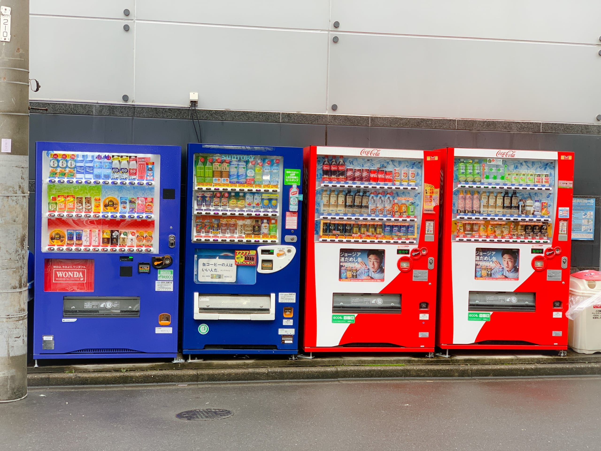
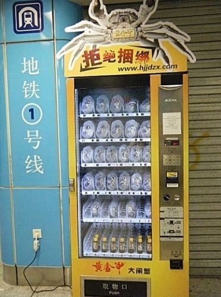
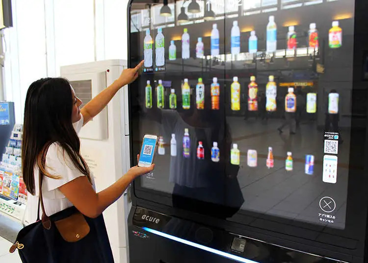
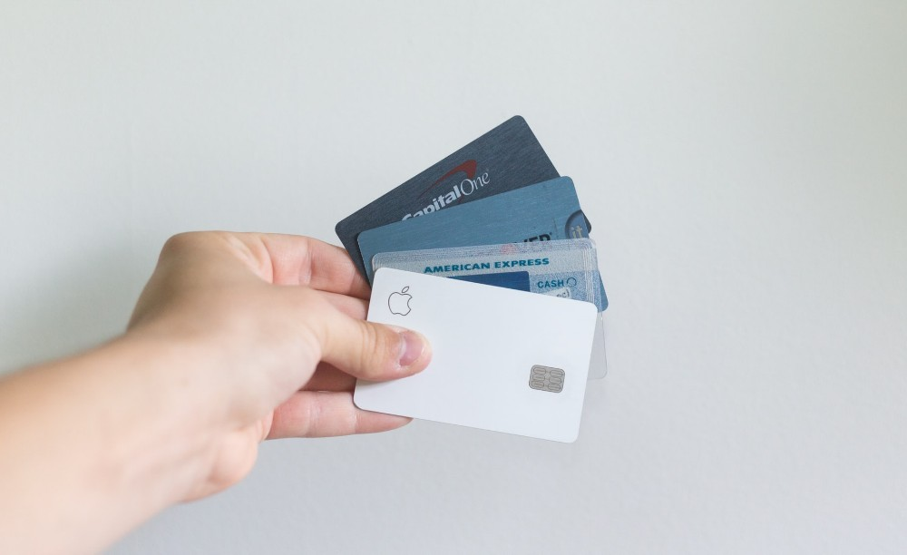
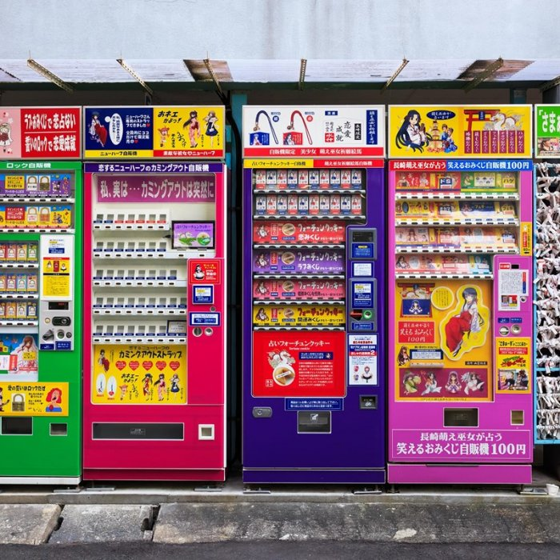
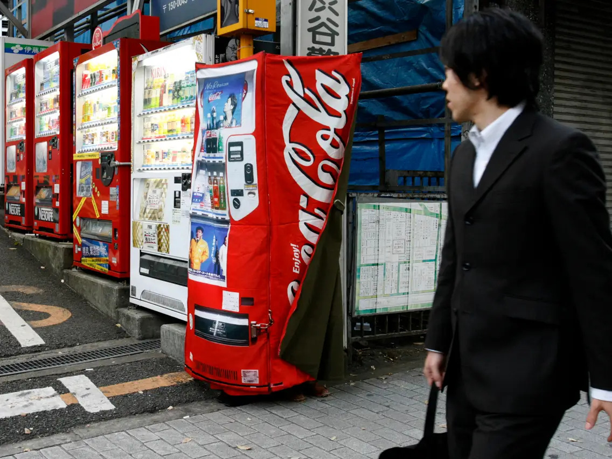

ABOUT US:
Welcome to "Vend-o-Japan: Your Ultimate Guide to Japanese Vending Machines". This website showcases Fun Facts about Vending Machines, Some of the Most Exotic Items found in Japanese Vending Machines, and Why Vending Machines are So Popular in Japan?
Some Interesting Fun facts about Japenese Vending machines:
- Japan is Home to over 5.5 Million Vending Machines! That's one for every 23 people! J-Vends
- Vending Machines are known for their innovative features, such as touchscreens and facial recognition technology.
Lot more Fun Facts are discussed!
When it comes to Exotic Items, Japanese Vending Machines do not disappoint. You find items from live bait to cameras to even gold bars! J-Vends offer a unique shopping experience and a reflection of country's commitment to convenience and innovation.
Japanese Vending Machines are popular for many reasons. In this website, all the reasons are explored and explained!
To further showcase the fascinating world of Japanese Vending Machines, three exciting blog videos by YouTube Content Creators showcase the various food and items that are found and the fascination of Japanese Vending Machines!



FUN FACTS ABOUT JAPANESE VENDING MACHINES:
Japanese Vending Machines are a staple of the country's daily life and offer more than just a quick and convenient way to buy drinks and snacks. Here are some fun facts about these iconic machines:
-
Density:
Japanese has an estimated 5.52 million Vending Machines across the country! There is likely a vending machine for every 100 meters at any given location!
-
Wide Range of Offerings:
J-Vends offer a wide range of products from drinks, snacks to everyday needs. Some even fresh hot foods!
-
Technology:
Japanese Vending Machines are known for their advanced technology and innovation. Many machines feature touchscreens and digital displays. Some even can reconize faces and suggest product's based on a person's age and/or gender!
-
Safety:
J-Vends are known for being safe and reliable. They are well-mainted and restocked regularily, most have been designed to withstand harsh weather conditions and vandalism.
-
Sustainability:
Japanese Vending Machines have become environmental friendly. Many using renewable energy sources, like solar power, to reduce their carbon footprint.
-
Cultural Significance:
J-Vends is an iconic part of Japanese Culture, reflecting the country's commitment to convience, efficience and technology. Often featured in popular media like anime and manga. Lastly, J-Vends are a symbol of the country's innovative society.
-
Acceptable Payments:
Japanese Vending Machines accept various forms of payment options from cash to prepaid cards to various payment cards. Additionally, some machines now accept mobile payments like Apple Pay and Android Pay.

To learn more fun facts:Click Here
MOST EXOTIC ITEMS FOUND IN JAPANESE VENDING MACHINES:
Japanese Vending Machines are famous for offering a wide range of products, from drinks and snacks to everyday essentials. However, some machines in Japan offer some truly exotic items that are hard to find anywhere else in the world.
Here are some of the most interesting and unique items that you can purchase from a Japanese Vending Machine:
-
Live Crabs:
Live Crabs, kept fresh and in good condition are one of most unique products found in Vending machines at Japan. These machines are popular in tourist areas, and offer a unique and convenient way to try fresh seafood.
-
Sake:
Sake is a popular alcoholic drink in Japan and can purchased from vending machines in various flavors and size. Some machines sell premium Sake, which is rare to find.
-
Fresh Eggs:
In rural Areas of Japan, Vending Machines offer fresh eggs stored in optimal temperature. This provides a conveniance way for people in the area to buy Fresh Eggs, even when grocery stores are closed.
-
T-Shirts:
Japanese Vending Machines sell T-Shirts featuring popular anime and manga character, providing a quick and easy way for fans to purchase merchandise.
-
Rice:
Rice is a staple food of Japan and vending machines offer pre-packaged rice for sale. These offer a convenient way for people to purchase rice, especially in rural areas.
-
Bouquets of Flowers:
Vending Machines selling fresh flowers are pretty common in Japan, especially in train stations and public areas. These machines offers convenient way for people to purchase bouquets for gifts or special occasions.
-
Bicycle Rentals:
Vending machines in Japan offer bicycle rentals, making it easy for people to rent a bike and explore the city. These machines offer a sustainable and eco-friendly way to other forms of transportation.

To find more exotic and strange items:Click Here
WHY ARE JAPENESE VENDING MACHINES SO POPULAR?
Vending Machines are an Iconic Part of Japanese culture and for many good reasons. They are incredibly popular due to to a variety of factors, which include convenience, innovation, reliability and accessibility.
One of the primary reasons why Vending Machines are so popular in Japan is their convenience. There is over 5.5 million vending machines across the country, almost a within a few minute's walk from wherever. Makes them a convenient option for people on-the-go, who need to grab something quickly.
Another reason is the innovative technology that vending machines use. Many machines now feature touchscreens and digital displays, some even have the ability to recognize faces and suggest products based on person's age and gender. Not only makes the experience fun and engaging, but also allows for a more personalized shopping experience.
Vending Machines in Japan are known for their reliability. They are restocked regularly and have been design to withstand harsh weather conditions and vandalism. This makes them a safe and trustworthy option for people to use, even in the middle of the night.
Lastly, Vending Machines are incredibly accessible. They offer a variety range of products, from drinks and snacks to everyday essentials like umbrellas and toiletaries. Additionally, they accept wide range of payment options, making transactions simple and fast.

OTHER INFORMATION:
Here are Some YouTube Bloggers enjoying and showcasing some of most fascinating J-Vends you can find!